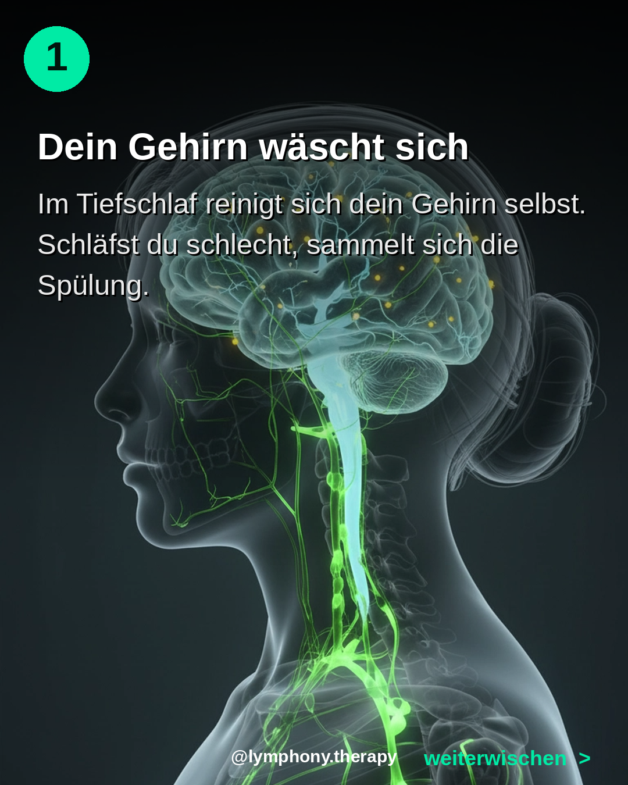
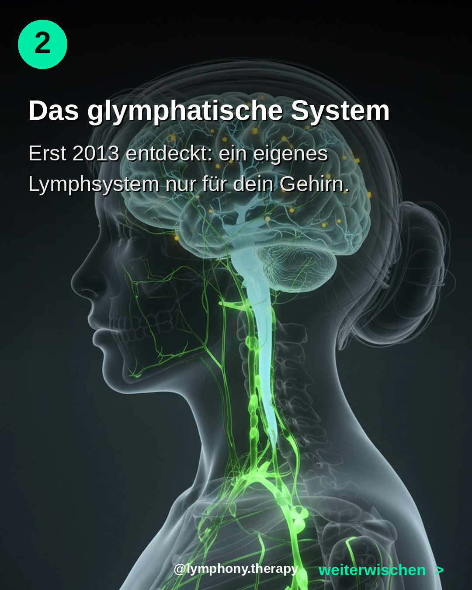
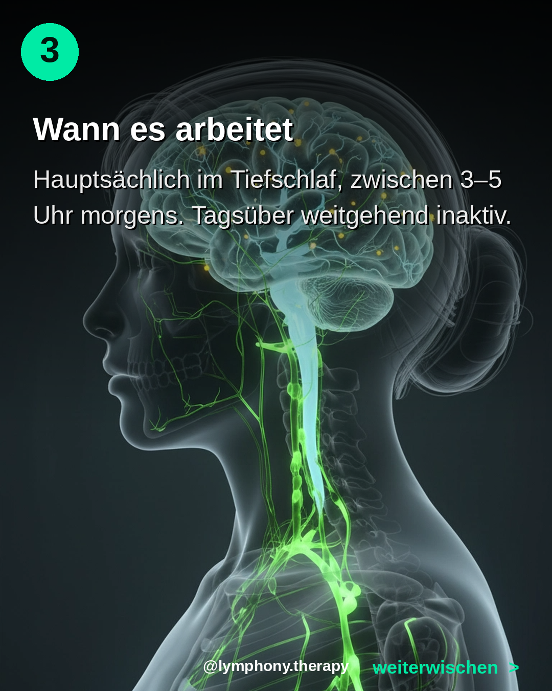
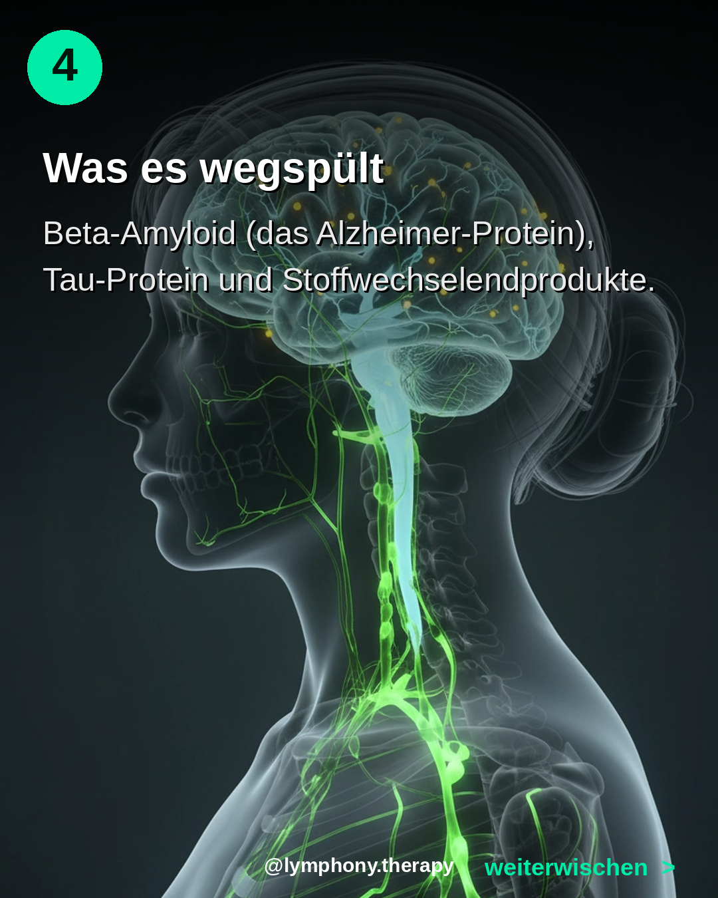
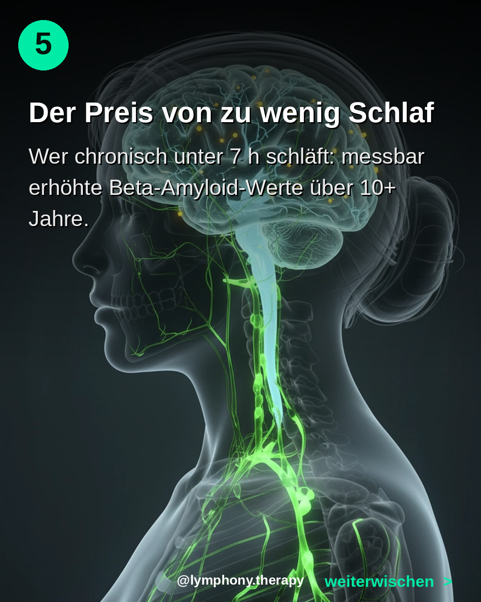
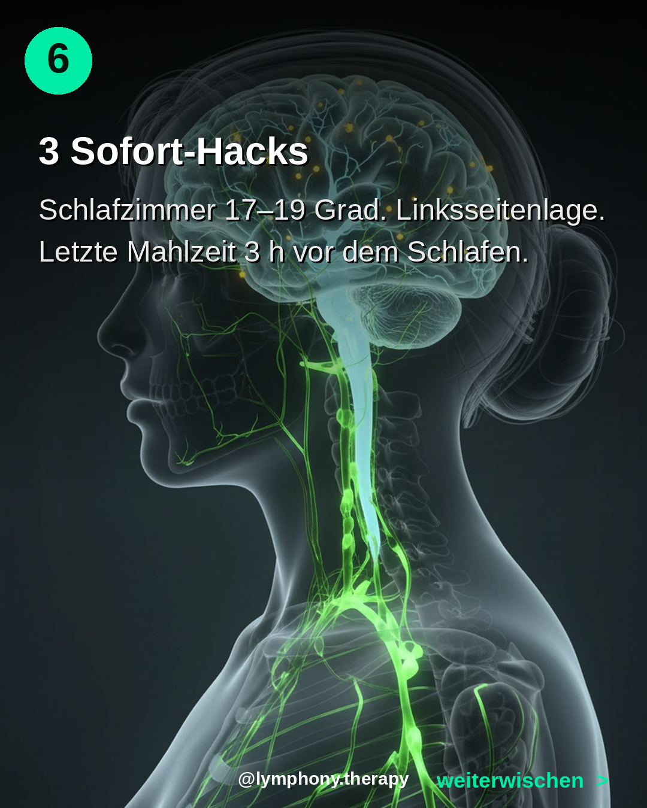
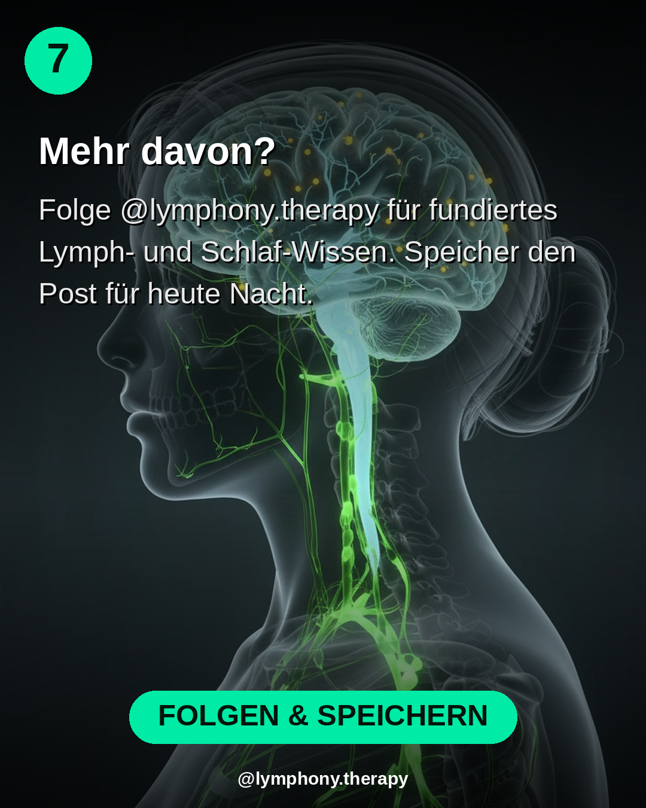

Bilder lange gedrueckt halten zum Speichern







Im Tiefschlaf wäscht dein Gehirn sich selbst.
Erst 2013 wurde das glymphatische System entdeckt: ein eigenes Lymphsystem nur für dein Gehirn. Es arbeitet HAUPTSÄCHLICH im Tiefschlaf, in den ersten 4 Nachtstunden.
Was es spült: Beta-Amyloid (das Alzheimer-Protein), Tau, Stoffwechselendprodukte.
Was passiert wenn du chronisch schlecht schläfst: das Spülwasser sammelt sich. Brain Fog. Vergesslichkeit. Langfristig: signifikant höheres Demenz-Risiko.
Drei Sofort-Maßnahmen im Carousel. Speicher den Post.
Quelle: Xie et al. 2013, Science 342
Wie viele Stunden schläfst du im Schnitt? Kommentier mit deiner Stundenzahl. Ich antworte mit einer personalisierten Tipp-Empfehlung.
Folge @lymphony.therapy für mehr.
#glymphatischesystem #schlaf #tiefschlaf #alzheimer #longevity #brainhealth #gehirn #sleephygiene #lymphony #lymphsystem #neurowissenschaft #praevention #demenzpraevention #sleepoptimization #sciencebased